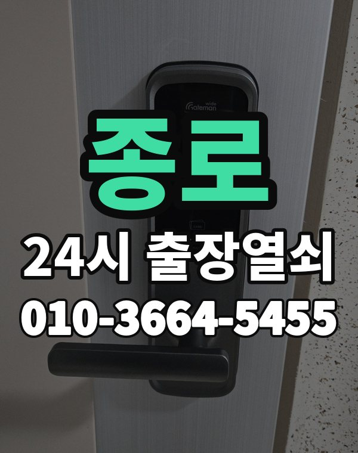

종로 출장열쇠, 이런 동네입니다
종로구는 평창동, 부암동처럼 언덕 위 단독주택이 많고 혜화, 창신동 쪽은 오래된 다세대가 골목마다 이어집니다.
대문과 현관문이 따로 있는 집이 많아 어느 문이 잠겼는지 먼저 여쭤봅니다.

종로구 출장 가는 동네
- 혜화동
- 평창동
- 부암동
- 삼청동
- 창신동
- 숭인동
- 이화동
- 사직동
- 무악동
- 교남동
혜화동 출장열쇠, 평창동 열쇠집처럼 동네 이름으로 찾으셨어도 같은 곳입니다.
적혀 있지 않은 동네도 종로구 안이면 다 갑니다.
종로에서 하는 일
종로 출장 부르실 때
골목이 좁고 일방통행이 많아 정확한 주소와 가까운 큰길을 알려주시면 빨리 갑니다.
상가와 사무실 출입문 도어락도 같이 봅니다.
종각역, 광화문역, 혜화역, 동대문역 근처라고 말씀해 주셔도 위치 잡기가 쉬워집니다.
가까운 역이나 큰 건물, 단지 이름을 같이 알려주세요.
- 정확한 주소, 아파트라면 동과 호수
- 번호판 상태 (꺼짐, 켜짐, 경고음)
- 거주 확인용 신분증이나 주소 나온 우편물
전화부터 작업까지 순서는 이용안내에 적어 두었습니다.
종로 출장열쇠 자주 묻는 질문
종로 어느 동네까지 오시나요?
혜화동, 평창동, 부암동, 삼청동, 창신동, 숭인동 등 종로구 전 지역 갑니다. 목록에 없는 동네도 전화로 위치만 알려주시면 됩니다.
종로 늦은 시간 출장도 되나요?
24시간 전화 받고 출동합니다. 위치를 알려주시면 도착 예상 시간을 먼저 말씀드립니다.
끝내 못 열면 돈은 어떻게 되나요?
못 열면 받지 않습니다. 얼마인지는 손대기 전에 먼저 말씀드립니다.
세입자도 문을 열어 주시나요?
거주하시는 분인지 확인한 뒤 엽니다. 신분증이 집 안에 있으면 관리사무소 확인도 됩니다.
종로 도어락 수리나 교체도 하시나요?
네, 합니다. 문에 맞는 제품인지 보고, 고칠 수 있으면 수리를 먼저 권합니다.